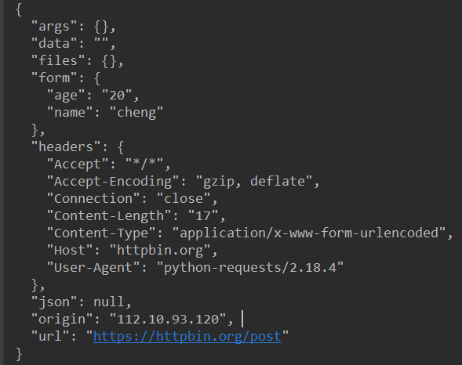
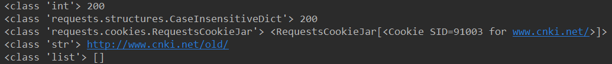
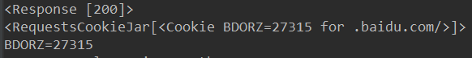
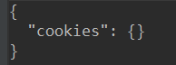
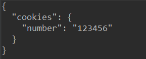

requests
GET请求：
带参数的url请求：
1 | import requests |
这样requests会给我们自动build这个网址，查看response.url 这个属性。会得到我们请求的代码
‘https://httpbin.org/get?name=cheng&age=20'
解析JSON：
requests还提供了一个解析json的方法，用get方法请求 https://httpbin.org/get，它的返回结果是一个json的字符串，所以我们可以直接调用response.json方法得到。
 ;)
;)
1 | # coding=utf-8 |
用json.loads把json数据转化字典方法，同样打印输出，发现和response.json()是一样的，其实response.json()就是通过一个json.loads()方法
获取二进制数据
Requests 会自动解码来自服务器的内容。大多数 unicode 字符集都能被无缝地解码。请求发出后，Requests 会基于 HTTP 头部对响应的编码作出有根据的推测。当你访问 r.text 之时，Requests 会使用其推测的文本编码。你可以找出 Requests 使用了什么编码，并且能够使用r.encoding 属性来改变它。
response.content()方法可以使你也能以字节的方式访问请求响应体，对于一些图片和视频 音频内容，需要用到content
https://ssl.gstatic.com/ui/v1/icons/mail/rfr/logo_gmail_lockup_default_1x.png 是一张gmail的图片 通过储存content属性就可以获得图片
1 | # coding=utf-8 |
成功写入了图片
添加headers
一些网站会检测请求方是不是机器，如果是机器，就不能成功访问，所以要添加headers伪装成浏览器
1 | # coding=utf-8 |
添加上headers后的requests就可以伪装成浏览器了
post请求
1 | # coding=utf-8 |
发送了post请求，返回结果：

可以看到服务器接受了我们post的data，返回了一个json格式的数据.
response常用属性
1 | # coding=utf-8 |
输出结果：

可以看到服务器返回的状态码是int类型的数据，headers是一个字典类型，cookies ，请求的网址是一个字符串类型，history是浏览的历史
文件上传：
1 | # coding=utf-8 |
返回的结果中有file这个字典键值，对应的是我们上传的文件
cookies：
response.cookies是一个字典的形式，我们可以通过for循环把他们print出来
1 | # coding=utf-8 |
运行结果：

会话维持——session
模拟登陆
普通的get方式：
1 | # coding=utf-8 |
这里，我们第一次请求网站，设置cookies，当第二次请求是，返回结果是：

可以看到第二次请求的cookies是空，原因是我们发起了两次请求，这两个请求是完全独立的过程，他们两个是没有相关性的，可以把他们想象成用两个浏览器分别访问，相当于模拟了一个会话。
用session请求：
1 | # coding=utf-8 |
运行结果：

可以看到第二次请求的返回值就是第一次设置的值，可以把他们看作一个浏览器先后发出了请求,会话对象让你能够跨请求保持某些参数
证书验证：
有些网站访问时会出现证书错误的情况：
有两种方式可以解决：
一种是修改requests中的varify参数，使他为false：
1 | # coding=utf-8 |
这样访问时会自动忽略网站的证书。但是requests还是用生成warning，提醒你证书是不安全的我们导入urllib3模块，用disable_warnings()方法
第二种是直接指定一个证书：
1 | # coding=utf-8 |
代理设置
1 | import requests |
直接添加一个proxies的字典就行
当代理有密码时，只要在修改values值，添加上用户名和密码
1 | import requests |
如果是shadowsocks可以 pip install requests[socks] 然后将proxies修改成：
1 | import requests |
超时设置
1 | import requests |
限制了响应时间，如果大于0.2秒，会抛出异常
认证设置
1 | import requests |
这样的两种auth属性都行
异常处理
exception requests.RequestException(*args, **kwargs)[源代码]¶
There was an ambiguous exception that occurred while handling your request.exception requests.ConnectionError(*args, **kwargs)[源代码]
A Connection error occurred.exception requests.HTTPError(*args, **kwargs)[源代码]
An HTTP error occurred.exception requests.URLRequired(*args, **kwargs)[源代码]
A valid URL is required to make a request.exception requests.TooManyRedirects(*args, **kwargs)[源代码]
Too many redirects.exception requests.ConnectTimeout(*args, **kwargs)[源代码]
The request timed out while trying to connect to the remote server.
Requests that produced this error are safe to retry.exception requests.ReadTimeout(*args, **kwargs)[源代码]
The server did not send any data in the allotted amount of time.exception requests.Timeout(*args, **kwargs)[源代码]
The request timed out.
Catching this error will catch both ConnectTimeout and ReadTimeout errors.